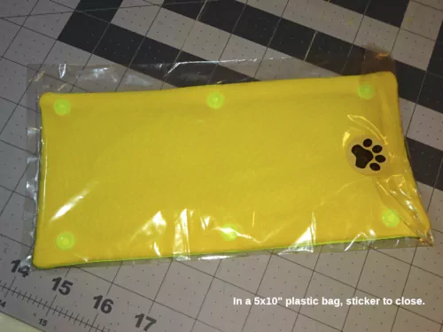
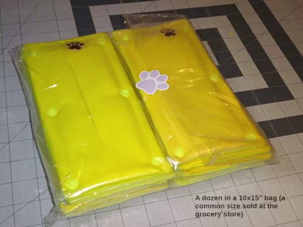

How to make leash sleeves
I was inspired to make and donate "Adopt Me" leash sleeves after seeing one made by Patience & Love.[1] This page explains how I make mine. I targeted these dimensions based upon the P&L sleeve: However, I ended up shrinking those dimensions about 4% (except the distance between snap holes in the y - vertical - direction which would change how the sleeve grips the leash). This photo shows the P&L sleeve (top, embroidered) and one I made (bottom, silkscreened): Note: if I did this again, I would try expanding the space between the text tops (move the text down 1/32" each side for a total 1/16" increase between text tops). Sometimes I feel like that vertical position of the text could be a little better balanced in the background. There's space for it to move a little toward the snaps. This zip file contains the following artwork drawn to the quick-ref dimensions (not my shrunk dimensions which was done when printing the mask to create the silkscreen): That artwork was created using the free Inkscape program. The 6-sleeve drawing is what I printed. It contains some "INFO" layers documenting measurements, my thoughts. The other drawings don't have that. (Note: The "INFO" layers won't make sense unless you keep in mind that the sleeves use 1/2" fabric outside the left & right edges of the artwork. This artwork was made for a screenprinting press with a print area of 18x15" printed on a 20x16" piece of fabric.). To create a silkscreen the image is printed (black) on white paper, and layed on the screen (which has been coated with photosensitive emulsion. The emulsion exposed to light hardens. The rest washes away.). When my silkscreen was created, I had the the printed image scaled down 4%. But, shrinking the 6-sleeve artwork isn't optimal because it contracted into the center. I should've shrunk the 1-sleeve & created a 6-sleeve from that. The shrinkage would've been spread around the whole fabric. The way I did it, it gets a little tight between the sleeves. (The "proper" way is to reduce the font size 4%. Move the text & dots where they should be. Then make 2-, 3- & 6-sleeve from that. Shrinking is a lazy way to do it. But, ".svg" stands for "scalable vector graphics." The whole benefit of this format is that it can be shrunk/enlarged infinitely without degradation. So, either way should be the same.). Clarification: I've said I didn't shrink the snap holes in the y - vertical direction. Actually, they did shrink with everything else. I compensate by installing the snaps 1/32" below the printed dots. (I use a template to mark the holes. That template has the correction.). I created the 6-sleeve artwork because I found a commercial (wholesale-only) contract printer willing to do this for me [I can't say who; they don't want to work with the public]. Their print area is 18x15 (for t-shirts). They required a minimum 19x16 fabric. I designed the 6-sleeve artwork for that. Cutting 60" fabric (16" long) gave me three 20x16" pieces. That gives 2" excess fabric in the x - horizontal direction (and 1" excess in the y - vertical direction required by the printer). I drew the artwork to use 1" (of the 2" excess in the x direction) for the sleeve. I.e., 1/2" outside the 18" print area (each side) is used for the sleeve. (This means there was 1" waste fabric in both the x & y directions. This was necessary for their machine's frame to clamp onto. If you silkscreened yourself, you wouldn't need any excess.). It turned out well. It was cheap! ($0.76 per piece of fabric. Each piece has 6 sleeves. That's $0.13 per sleeve @ 2023 prices.). If I did this again, I would print them myself. You can find videos showing how to silkscreen. It doesn't seem complicated. Start with one at a time, then 2-up, then 3-up. (I think 2-3 would be easy to work with; less potential for stretching the fabric, skewing the print the way 6 does). Printing a few at a time gives you a chance to modify the artwork's dimensions. The way I did it was "big bang" (printing thousands all at once. That was scary.). You can find local retail silkscreen printers who do low-volume promo jobs for local clubs & businesses. They can adapt the artwork for you. You'll pay more than I did, but have more of a relationship, flexibility to do small runs (make changes along the way). If you watch videos about silkscreening intending to do it yourself (educate yourself, show you're serious) they might let you watch what they do (in support of your cause). Finding a wholesale silkscreener as I did would be useful for group-buys where one person makes it happen, parcels out the result to the group. You should able to see 1-2 small runs from a wholesaler so you can see how it will come out before committing to a large job. They don't want a lot of little jobs as you figure out the artwork. It would be better to work things out first using DIY silkscreening (or a retail silkscreener). I use 100% polyester poplin. The front is neon yellow (aka "hi-vis yellow," "safety-fabric yellow"). Some people call it green (but there is a hi-vis/safety fabric that's more green, called neon green. That could look good too.). This color is hard to find because sellers often call anything yellow "neon yellow" (when its not even close). Or, I saw someone call it neon green when it was neon yellow. (Also, online photos rarely look like what the fabric will in person.). I buy a sample. If it's right, I buy everything they have. I bought 200yds that way. No regrets. Whereas, I bought 5-10 yards of other fabric I was optimistic about, and ended up wishing I only bought one. (Almost everything I found that was the right color was close-out fabric the seller couldn't get more of. So, there's an incentive to buy it when you find it. But, be careful to see it first. Most of the time what's called neon yellow isn't. You can use the disappointing samples for the back fabric, or interfacing.). For the rear fabric, you can use any color. (Since neon yellow's hard to find, it's easier use a different color). My favorite color for the rear is in the range of mango, amber, saffron & creamy Orangesicle color. I think it goes well with the neon-yellow front. Something more orange than gold color. But, not too orange (like Home Depot orange). This color is more available than neon-yellow, but still hard to find online because people call it yellow, gold, orange (when those names cover a lot of colors that aren't this). It doesn't matter since it's the back. But, when I find something that's right, I buy as much as they have (or confirm that it's something they can get more of). Polyester shouldn't shrink. But, I soak my cut pieces in hot water for a few minutes, then hang on a rack to dry. You should do this with the front pieces before printing, and the back pieces before sewing. These three things work together to provide rigidity (so it holds its shape), weight & body (plumpness; grips the leash better). I've used high-loft (heavy weight) batting by itself. When compressed against the leash, it gave some rigidity like stabilizer or interfacing. Medium-loft with interfacing gives some rigidity without being as "poofy" (overstuffed). I've used stabilizer & low-loft batting (and no-loft fleece batting) for firm body & almost no poofy'ness. The best combination depends on your front & back fabric's weight. It takes some experimenting to find the best combination. It's useful to make prototypes (with notes written on each about the materials used). Keep those to revisit over time. I found myself trying things, getting an impression it wasn't right. Then trying it again months later and liking it more. It would've been easier to keep those experiments. I mostly use Pellon 926 extra firm stabilizer. The least expensive I've found are 20"-wide by 10-yd bolts on Walmart's website (online-only purchase). I also use Pellon 50 heavyweight (thinner than 926). I use this as a 1" strip along the long edges of the 926. With only 926, the edge between the snaps isn't as rigid as I'd like. It can spread open a little too easily. Adding a strip of 50 gave that edge a bit more stiffness. (I had the idea to do this after thinking about "boning," which is too rigid for this. Eventually, I had the idea to add a strip of stabilizer for a similar effect.). There's also Pellon 40 midweight. It's thinner. If the fabric is heavier like denim or canvas, then I use Pellon 50 as the full-sleeve stabilizer (instead of 926), and Pellon 40 for the 1" edge strips. Stabilizer is made for support while sewing. From what I've read, it's usually cut out after sewing. (Ex., a hat/cap with embroidered design will usually have stabilizer inside the hat.). But, Pellon's product guide gives examples of permanent use (like drape headers, hat brims). There's also "interfacing." I haven't looked at it much. Now that Joann is out of business, it's hard to expose yourself to all the varieties. The only interfacing I've used is Pellon 988 fleece interfacing. I got it because Fairfield's Project Fleece and Warm Company's Soft & Bright (both are considered batting) were a little too much for what I was trying to accomplish. 988 is very similar; a little lighter, less thick. But, still too much for the materials I use. (I almost never use it.). I'm more likely to use a layer of white polyester poplin fabric (same weight as the front/rear fabric) as "interfacing" when the batting is too light. Batting can vary. A sheet of fabric adds a little more weight, stiffness if needed. I always stack the interfacing between the stabilizer & batting (see order-to-sew). In that position, you can use your back-fabric rejects (wrong color) for this. It won't show through the front nor back. (I.e., after turning inside-out, the white stabilizer will be between the "interfacing" fabric and the front fabric. I don't understand the difference between interfacing and stabilizer. The internet says interfacing is intended to remain in the sewn product (like shirt collars; sleeve cuffs). Stabilizer is to give support while sewing, then cut out. (But, as mentioned above for stabilizer, Pellon's product guide gives examples of stabilizer used like interfacing.). You should always use 100% polyester batting. Batting should be thought of in terms of weight & loft. You can have heavy low-loft (even no-loft) batting. You can have light batting with a relatively high loft for its weight. If a batting has higher loft, that can add some rigidity when the sleeve is compressed around a leash. A heavy no-loft batting can have rigidity, but not grip the leash as well (may slide down). You have to experiment with different products to find a good mix of rigidity (from stabilizer and/or interfacing) and compression (batting). I don't have one way of making sleeves. I revolve around the following products. Each is "best" in its own way. (I believe LW is best. I would make that if I were starting. But, I have LL & FW. I still make those and like them too (a little better in their own way). I use all these with Pellon 926 & Pellon 50 edge strips. Batting can have variations in loft/weight. When these vary toward lighter/thinner, I add an additional layer of fabric (as "interfacing") for more stiffness, heaviness, body. (When you cut your batting (especially if pre-cutting a lot), keep it stacked in order. That works a little better than mixing the pieces together and encountering variations more randomly.). "Fairfield Poly-Fil Low-Loft" (LL). This batting is inexpensive at Walmart. You should find it in the store. (It comes in different sizes. Calculate the cost per square-inch to see which is cheaper.). I've seen it in two packaging designs: Fairfield says the weight is 2oz/sq yd. The loft is about 1/4", but it's very light/silky/wispy. It compresses very easily. There can be a lot of variation between batches (and even in one bag). If this batting varies too much more toward thin/light, I use a sheet of fabric as "interfacing." Sometimes I use Pellon 988 interfacing, but that's usually too much weight/bulk. I might consider a lighter back fabric if I use Pellon 988. Fairfield "Poly-Fil Featherweight thermal bonded" (FW). 48" x 60yd roll (SKU: RSF-48-60YR-1. 2.25oz/sq yd. 3oz/linear yd). This is almost exactly the same as LL. Since you buy this in bulk, it costs half as much per-sleeve. Being thermal bonded, it's a little more consistent and stable. The thermal bonding gives one side a slightly crusty feel. I face that side against the stabilizer. (The other side seems softer, plusher. I want that facing the leash so it might conform/grip the leash better.). This batting may be slightly less lofty than LL, but a bit more firm/rigid (13% more weight). I feel as if I like how this comes out better than LL. I keep thinking I should stop using LL. But, when I make an LL sleeve, something about it can feel better in some way (the higher loft gives it a different feel). Like LL, I may use a piece of fabric as "interfacing" if the batting feels like it's varying lighter/thinner. Compared to LL with fabric "interfacing," I like this (with fabric "interfacing") better. See Fairfield's product page for more info. I've seen this on Amazon (ASIN B00YNZ7V78). Also QuiltBatting.com, but they're pretty expensive. Fairfield "Poly-Fil Lightweight Thermal Bonded" (LW). 48" x 45yd (SKU: RSL-48-45YR-1. 3oz/sq yd. 4oz/linear yd). This is 33% heavier than FW; and 50% heavier than LL. I like this batting the most. The finished sleeve has more springiness in the loft. It's firmer, more rigid; wants to return to its shape. Sometimes I think I should only make this, stop making LL & FW. But, when I make one of them, I feel like they're better in some way (they come out feeling like a glove. This one feels lighter and poof'ier, springier/resiliant which I like too.). I make a little of each, and can't decide which is best. This batting doesn't vary as much (thickness/weight). I didn't think fabric "interfacing" would be useful with this. But, when it does vary a little lighter, an added layer of fabric turns out really good. I like the resulting sleeve more than FW with fabric "interfacing" (which I like better than LL with fabric "interfacing."). Joann used to sell this by the yard (it was called "JR4" on their website). Joann also sold a bagged product (40" x 10yd) called "Soft & Crafty" on their website (but the bag said "Basic Batting"). It was virtually the same as this. The roll of LW I received has lower loft, but produces almost the same result because it's the same weight. Like the FW, I face the crusty (thermal bonded) side against the 926 stabilizer. See Fairfield's product page for more info. (Be aware: the scale photo with the dime is incorrect. It's not nearly that thick.). I've seen it on Amazon (ASIN B002PIOMAE). Quiltbatting.com too (same link as above) There's also Fairfield Project Fleece batting which is very easy to find, sold at Walmart. It's a little more soft/fluffy (loftier) than 988 interfacing. Warm Company Soft & Bright batting is no-loft like 988, but a little heavier, adds more substance than 988. I used these before I discovered stabilizer. They gave some rigidity without loft. But, it was never right. I haven't used either in a long time. I've used a heavy 3/4" high-loft batting with nothing else. In some ways I liked it when it was snapped onto the leash. It was highly compressed and tight. But, without stabilizer it was scrunchy, didn't stay extended. I never tried it with stablizer. Pellon 40 might help. Pellon FF76 (Flex-Foam; naked foam) is interesting. It's not batting. Pellon calls it a craft, home-decor material. It's often sold as stabilizer. Occasionally I make a sleeve with this, and feel like it might be good. I use Pellon 40 for the whole-sleeve stabilizer, and 926 edge strips. But, when the sleeve is turned inside-out, the foam folds into two layers around the edges. That's too much along the long edges (those edges are fat, want to pucker open between the snaps). I was hoping my iron on "high" might melt the foam a little as I iron the long edges. But, it doesn't. I'm thinking of cutting the foam 9-1/2" x 3-3/4" (or a little less) so it fits within the long-edge sew lines (but is sewn through the short edges like normal; folds over into two layers there like normal). I like the overall feel of this. It has a strong affinity to hold it's shape, spring back into shape. It has a little loft like batting (to comform to & grip the leash). I like the batting-based sleeve I make. They feel like a glove. They feel like quality apparel. This FF sleeve feels more crafty & purpose-built (for the job of displaying the printed message). It feels more like a tool; heavy duty, resilient. It costs less to make a sleeve (FF costs less than batting. It uses a lighter, less expensive stabilizer. No interfacing.). I keep returning to this thinking it might be better. Note: Don't confuse FF76 with FF77 which has a layer of "tricot" (fabric) on each side. It's thicker (5.5mm), and too much for a leash sleeve. FF76 is "naked" foam, and 5.1mm thick. I think there's also "fusible" variations of FF. I don't use that. There may be thinner foam which might work better (maybe allow the use of LL or FW batting). When you search for "sew-in foam" you find other products (which might not even be foam, like Annie's Soft & Stable fabric. I'd like to experiment with more of these. Summary: it's good to mix & match these different materials to see how it comes out. I've ended up where 926 plus 50 strips is the right stabilizer for the fabric I use. Then I like LL, FW & LW batting to get the right feel. For LL & FW, I may add fabric "interfacing" (between the stabilizer and batting), or perhaps Pellon 988. If I use heavy fabric, then you like Pellon 50 stabilizer for the whole sleeve, and strips of 40. You have to play with all these to see how they work together. It's more like art than science. Idea: I intend to explore "fabric glue." Many stabilizer & interfacing products come in "fusible" versions. I was thinking of using one of those for the edge strips. When I iron the long edges, that surface would adhere to the 926 (underneath it, and to interfacing or batting on top of it). That might make the long edge more rigid. But, the fusible products are almost twice as expensive. There's also double-sided sheets of iron-on adhesive film. (A 1-inch strip of that could be added between 926 and 50; sewn, turned inside out and melted while ironing the long edges.). That appears to be less expensive than fusible versions of stabilizer & interfacing. Or, "fabric glue" could be used to glue the 50 strips to the 926 (make them in advance). One of these days I'll try this. I feel like glue (or heat fusing) would be beneficial when using fabric "interfacing." When I use that, it's harder to get a sharp edge along the long (snap) edges of the sleeve. I'm thinking about reducing the 50 edge strips to 40, and add glue. I'd like to compare that to what I do now. I use Gutterman Mara-70 poly (tex-40) neon yellow #3835. You can find this on Wawak, or RipstopByTheRoll. This is the only tex-40 I've found in neon yellow. (They have neon green too, #3836). You can find lots of neon yellow in tex-70 on Amazon. But, to me that's too heavy for this. It could work depending on the heaviness of your fabric. My fabric is thinner, prone to puckering. I think heavier thread would make that worse. But, I haven't tried it. You'll probably need a walking-foot sewing machine to sew 5 layers (2 stabilizer, 1 batting, 2 fabric). Most walking-foot machines are made for heavy work (upholstery & leather). Many home machines can use a "walking-foot" attachment. It's not a real walking foot (the top foot isn't powered, it simply pinches the fabric down against the bottom feed dogs, and moves with them.). I used one with a vintage Singer 201-2. It was definitely better than not using it. I got the impression there are different versions of this attachment; not all work as well.[2] Pinning the material together worked better than clips (more solid, less puckering). But, I think I've learned to sew better since then. If I still used that machine, clips might work better now. Using clips, there's a technique which can help reduce puckering: lay the palm of your left hand flat on top of the material (your fingers pointing to the rear; your thumb pointing to the right. You want your index finger and palm as close as possible to the sew line while allowning the foot travel. (Your thumb will contribute to holding the material taught.). You want to flatten & tighten the fabric, but not interfere with its movement. You don't want to "help" it move. This takes some practice. There's a sweet spot where you're flattening the fabric near the line to sew, steering the fabric so it sews on the line - but not creating drag nor pushing it. Similarly, it helps if you clip the material so it's taught across the top (like a drum). I.e., after clipping the material, it will be poofy, loose, slack. Flatten the material with the palm of your hand, and open/close each clip taking the slack out of the material. This makes the technique above work better while sewing. Lower-loft batting is less problematic. Higher-loft are prone to more puckering. It's more important to use the flat-hand technique to flatten those as you sew. Pins should be the ultimate solution, but they're slower to install. You have to remove them as you sew. Today, I use a Juki DU-1181N which is a real walking-foot machine and made for lighter thread & materials (compared to most industrial walking foots). It works very well for this. It's almost too much machine for tex 40 thread & the light fabric I use. You'll have to fiddle with its adjustments[3] to get it dialed in for no puckering (then it's great). This machine uses an oil pan & pump, and designed to operate at high-speeds. There's a sight bowl on top where you should see oil splash (but won't until a certain speed). I sew at the motor's slowest speed. I never see splashing. Because of this, I wait to wind the bobbin until it runs out. (Normally, I would wind while sewing.). I wind it with the motor speed-knob turned to 1600-1800 so I can see some splashing & know oil circulated. (Don't go over 2000 because that's the machine's max sewing speed.). Since this machine is self-oiling and designed to be used high-speed, I think it's better to wind the bobbin at high speed to make sure everthing gets oiled. (Sewing at the lowest speed doesn't need much lubrication. The pump may be spreading oil at a low speed - I just don't see it flinging onto the sight bowl? But, it seems wise to operate the machine at high speed occasionally to see the oil flow. Winding the bobbin is the perfect opportunity.). There are some external locations behind the machine that require manual oiling (see pg 8a of the instruction manual. Note: this manual is modified to be english only. If you prefer another language, see the official manual which has seven languages side-by-side through the entire manual - which is hard to read in any language.). This machine uses Juki #1 oil which is lighter than the #2 oil used by the LK-1900 I make collars & leashes with. The external oiling points might be ok with ordinary zoom-spout oil or #2. But, the pan should have #1. There's a felt pad underneath a rubber plug on the top of the machine. If you don't use the machine for awhile, the manual says it's good to apply some oil to that pad. (That should probably be #1 since it will mingle with the oil in the pan.). Note: You shouldn't tilt the machine open too often. Dirt can get into the oil pan. When you do tilt it open, do so carefully, look for junk trapped in the crack between the table and base of the machine. Use q-tips to carefully clean that ledge without knocking anything into the pan. When the machine's not in use, cover it with a plastic bag that's large enough to cover the crack around the machine's base (prevent dust from collecting in that crack). I cut a large 35-gallon yard/leaf trash bag to be 18-20" tall. That makes a good cover which goes past the crack around the machine. (If you don't use the machine for awhile, wipe the table for dust, but don't wipe it into the crack.) There is also a brochure, parts list and engineer's manual for this machine. I draw the horizontal sew lines 13/16" from the bottom edge of the text. (Note: this font's "O" & "!" descend a little compared to the other letters. I align to the other letters.). I draw the vertical lines 5/8" from the printed dots. For the end that's sewn closed: I tend to draw the line 1/16 to 1/8" less distant. (This end can be short for me due to the way I shrunk the 6-sleeve artwork. The two rows of three sleeves shrunk closer together.). For the end left open (the sleeve turns inside-out through): I mark 1/16" further from the dots. But, it's important that there's a generous amount of excess fabric to fold inside & sew closed. If the excess is short, it's hard to fold & sew closed. Ex., sometimes my gang of 6 sleeves weren't printed as centered as I hoped. In that case, 5/8 + 1/16" (11/16") doesn't leave enough excess. I might mark the line at 5/8" (or even 1/2" if I have to). OTOH: If the excess is large, I never draw the line further than 11/16". Instead, I'll leave more of that excess to fold inside. (I talk about that topic when I trim the excess, below.). I think drawing the line at 3/4" looks imbalanced compared to the other end. If I didn't print the dots (they're not as useful as I thought they'd be. I talk about that more in the section Marking the snap locations using a template below), I would draw the lines from the vertical edges of the letters M & E (top line of text), and D (bottom). Sewing rulers have measurement lines drawn every 1/8". It's not hard align the edge of the ruler from those vertical edges. The reason I draw the vertical lines from the printed dots instead of the end of the text line is because the exclamation point is set to a smaller font size. It doesn't align with the "A" above it. The printed fabric is sewn upside-down, so you need to draw the lines on the back of the fabric. Poplin is lightweight, I can easily see the printed text from the back. If you use heavier fabric, you may have to draw the lines with a light shining from underneath. I use a water-erasable pen. I've learned to pay attention to how heavy (strong) the line is because they'll bleed when ironing the edges (which involves spraying water on the edges). It's not a big problem. It easily wipes off with a damp cloth (I do this when I bag the sleeves). But, when a pen's new, I try to press lightly. When it's older, I drag the pen twice to get a stronger line. There are air-erasable pens (disappearing ink). They could be better. I like to mark a couple dozen sleeves at once, and take a couple days to sew them all. Air-erasable lines may not last that long. Everything is cut 9-1/2 x 5" (except the edge strips which are 9-1/2 x 1"). It doesn't have to be exact (I don't measure anything from the cut edges). I stack the material in the following order for sewing (listed top-to-bottom): Note: When you turn the sleeve inside-out, the rear fabric's top side will be the exposed side. Fabric has a "finished" side which usually looks nicer (the unfinished side can look coarser). I like the coarser side to be exposed on the back of the sleeve. It looks more like "the back." Plus, the coarser finish might grip the leash better. My reasoning for that order: 1) I always want the batting (loft) to be against the back fabric (after it's turned inside-out). I feel like that will conform around the leash and grip it better. 2) If using a bonded batting, I want the softer (not crusty) side facing the back fabric. I think it will conform to the leash better than the crusty side. 3) I never want anything between the stabilizer and the front fabric. There's no reason to. 4) If I use interfacing (fabric or 988) for a heavier/stiffer sleeve, I put that between the stabilizer and the batting. If put it between the batting and the leash, it wouldn't conform around (grip) the leash as well as the batting. The first step is to lay the 1" strips of (Pellon 50 or 40) stabilizer along the edge of the Pellon 926 (extra firm) stabilizer: If I use interfacing, I lay that on top of the stabilizer. Next, I lay the batting (crusty side facing down if bonded), then the rear fabric (coarser side up), and the front fabric on top of that (printed side down). I position the materials so their will be an even amount of excess all the way around. Next, I clip the center of the long-edge facing me; rotate the material 180 degrees & check the positioning from that side (clip that center). Then proceed to re-apply the first four clips. Check the positioning again. Then palm-flatten the material & re-apply the long-edge clips to take the slack out of the material - make it "taught" as described in the sewing machine section above. Finally, I apply the short-edge clips.): The red "X" shows where to start sewing, and where to end. If you have trouble with the fabric shifting, puckering, then you may need to use pins to hold it together more securely: That goes slower. You can sew over the pins, but they'll bend & become hard to reuse (I used the thinnest pins I could find, for lace or appliqué? Thicker needles might not bend, but they might leave holes in the face of the sleeve?). Your machine's needle may break if it hits a pin. It goes slow removing pins compared to removing clips. But, this should work no matter what kind of sewing machine you have. You probably need a walking foot for this, even if it's just the "attachment" type. How well that works (doesn't shift, pucker) has a lot to do with the presser-foot pressure, the thread tension, the stitch length. Your technique (holding the fabric down flat with your palm and fingers extended) as it sews. I suggest that you buy some random/cheap poplin fabric & experiment sewing these materials (layers) for practice, play with the adjustments I mentioned until you get it working well. No reason wasting actual sleeve fabric figuring this out. You might have to pay an experienced sewer to show you how to do it. This kind of sewing (layers) is similar to quilting. They struggle with the same thing. Seek them out. See the sewing machine section above. This shows the sewn sleeve: My stitch length is 6-1/3 stitches per inch. I start sewing a little lower than the printed dot (A), going in reverse up to the text (B, to lock the stitch). Then forward all the way around (clockwise). I end the same way I started: going to the text (C), then reverse a little past the dot (D, to lock the stitch). It's important to drop the needle exactly in the corners, or a little past. If you stop short, you'll get rounded corners when you turn the sleeve inside out. Sometimes it's best to go one more stitch past the corner. I rotate the material 45-degree so the corner stitch lands behind the drawn corner. (Then I rotate another 45 so the next stitch lands on the sew line in the new direction.). Sometimes I push the reverse lever a little before the needle sinks into the fabric. This reduces the stitch length to land closer to the drawn corner (if it's going to overshoot the corner too much). Or, if I'm short just a tiny distance: I back the needle out, lift the foot & nudge the material a little so the needle comes down where I want it. (You should only use that method for a very short distance. If you go too far, you could create a gap between two stitches that the corner-pointing tool could poke through.). After sewing, I trim the two long edges to leave excess 1/4" + 1/32" to 1/16" past the stitches. I trim the short edge (sewn closed) to be 1/4" (a little more if there's enough material. Sometimes this end is a little short due to the way I shrank the 6-sleeve artwork. If there's enough material for 5/16", I leave that much. I try to have at least 1/4"). I trim the other short edge (left open) to 3/8" + 1/16" (7/16"). Being a little longer helps with folding it inside & sewing closed. 1/4" works if that's all there is. But, if you have more, it's easier to fold and sew closed: Cut the corners off to make it easier to "point" the corners. Thus cut should be 1/16 to 1/8" from the stitch. Be careful to judge the distance from the stitch, not the drawn corner (this is important if you sew past the corner. You might cut through the thread, or so close that the fabric is prone to unraveling. It's handy to keep some clear nail polish. If you go too close, you can apply some polish to protect it from fraying.). Once turned inside-out & the snaps installed, the corner stitch won't get much stress. You just have to be careful while pointing the corners not to push too hard on any that you cut too close. Note: On the end not sewn closed (which has the longer fabric remaining), it's easy to angle the cut further into that larger excess fabric. That doesn't seem to produce the best result. I feel like it's best to get the same 45-degree cut like the two other corners. (Pay attention to the drawn corner, not the fabric's corner which can be misleading - an "optical illusion" - because it's longer along that open edge.). After trimming the edges & cutting the corners off, turn the sleeve inside out like a sock. Use a corner "pointing" tool to push the corners out. I use a Dritz 636 Point Turner (ASIN: B00CI571LQ). Warning: the tip is sharp. It can poke through the fabric or between the stitches. (I lightly rubbed the point against a file to make it a little less sharp.). I clip the open-end with 3 clips: It seems that leaving it clipped awhile can help it stay folded when ironing. I don't know how long. But, going straight to the iron doesn't work as well. 30 minutes might be enough. I'm in the habit of giving it a few hours. When you turn the sleeve inside out, the order of materials will be (going front to back): Finally, I iron the two long edges, and the one edge clipped closed (waiting to be sewn). I don't iron the other short edge. I don't see any reason to. Maybe it will grip the leash better if its fatter. I lay the sleeve on the ironing board with the back-side facing up. I spray water along an edge to iron, and then iron. I iron only 1/2" into the sleeve (you don't want to iron the whole sleeve. That would flatten the battning.). You have to play with the heat. It seems like the batting can melt inside the sleeve (the bonded FW and LW bonded battings can do this at a lower temperature than LL. I try to set the iron as hot as it can be without melting.). If you don't get melting, you'll have a pretty flat surface around the edge, compressed. If it melts, you'll notice it feels harder, and you may feel a hard ridge where the batting didn't melt. When starting: lay a piece of fabric over a piece of batting, and find what temperature causes melting. (Iron it, examine it; turn up the heat; do it again until it melts.). The remaining photos show the ironed sleeve. It has a sharper edge. You can especially see it in the photos of bagged the sleeves. I use Kam Snaps (B36 - Neon Yellow; size 20, which is 12.5mm diam; regular 5.6mm stem length). They make a hand & professional table press. I've only used the table press (DK93) to install snaps.[4] It's worth the money to buy two presses so you don't have to change the dies. (They make a no-change die which works with both male & female snaps. I haven't used it. The pros and cons sound like dedicated dies work better.). They make a snap-removal die for use with the hand press (KX8J). I highly recommend buying that because you'll occasionally do something wrong, crack a snap and need to remove it. It's much easier to do with the tool. (It's convenient to have two hand presses & two dies so you don't have to remove & flip the die for gender. But, you shouldn't have to remove snaps very often. It's not hard to use just one hand press for both.). Quality control: The snaps can crack during install. Sometimes I hear a crunch when pressing down. I examine the snap with a magnifying glass and usually see a crack (remove and install a new one.). You should snap them together at least once. I've seen the barrel part of the male pull off. (Something during the install weakened it, or it was a manufacturing defect). You won't know unless you're in the habit of snapping/unsnapping once as a matter of quality control. Kam-Snap kits include an awl to poke a hole through the fabric. WARNING: That awl is very sharp and painful when you jab yourself. I haven't jabbed myself for a long time. But, when I started, I did it a few times. It's very painful. You learn quick. Be prepared. You may have to endure it a few times. (You could make leather covers to go over the two vulnerable fingers. I do it without thinking now, and haven't stabbed myself for a long time.). The snaps should be positioned squarely to each other (and centered within the sleeve). If the snaps aren't square to each other the space between snaps will pucker. (If the snaps aren't centered on the sleeve, one long edge will hang past the other when snapped together. Or, it could be lopsided at each corner.). I added dots to the silkscreen thinking this would be simple & and timesaving. Unfortunately, the fabric can shift when silkscreening & sewing. (I screened multiple sleeves onto a large piece of fabric. Printing just 1 or 2 with a small screen might work better.). Instead of using the printed dots, I created a template to mark the snap locations onto the finished sleeve: I position the template on the sleeve so its straight with the sleeve's long edges (and equally the marking holes equally distant frm the sleeve's long edges. If they're not, one side will hang lower than the other when snapped together): In the x (horizontal) direction, I try to position the template so the marking holes are equally close to the printed dogs (left/right). I.e., if the printing is skewed - the dots are a little off from the marking holes, I try to position the template so no one hole & dot is more off than another (I try to spread the "off'ness" around to them all). Again, this is just for left/right positioning. The only thing I care about for vertical positioning is that the snap holes be square with the long edges & equally distant to those edges. I don't look at the printed dots.). The marked sleeve looks like this: You can see the significance of getting the snaps square to each other. If I installed the snaps at the printed dots they wouldn't be square, causing puckering when snapped together. (The above also shows how the template increases the distance between the snaps in the y vertical direction. Remember I said I had the artwork shrunk 4%, but I didn't want this distance between snaps to shrink - which would change how the sleeve grips around the leash. I corrected for that in the template. The marked holes are a little more distant.). To mark the hole positions: use one hand to press the template down firmly so it won't move (spreading my fingers to distribute the pressure over more area). I push a LEONIS Water Erasable pen (ASIN: B00IWEAPSS) into each hole, rotate it a bit for a good mark. (The template's holes are drilled to a size that's snug to this pen.). It's important that the template not move as you do this. Applying some painters tape to the underside of the template can give it some friction against the fabric. There's also "mokeskin" tape which more substantial and cushioned. (You shouldn't move your hand until all the holes are marked. If the drilled holes are too snug, the template may lift with the pen. Either can cause movement.). Note: I still like using the printed dots for side-to-side positioning. I feel like that takes some guesswork out of it. (Plus, I use the corner dots for marking the sew lines on the short ends of the sleeve.). But, the snap caps are a little translucent. You can vaguely see something's underneath. If I printed mine again, I'd try making the dot smaller. Or, not print them at all (the short-edge sew lines could be measured from the upside-down D's vertical edge and the vertical "M" & "E" edges below it.). To make the template shown above, I used a sheet of 8" square clear-plastic, .035" thick (a little thicker than 1/32". Amazon ASIN: B0CG8PLF3N). This almost too thin. But, it's easier to cut, and less expensive to practice with (make mistakes). I made a new template using a sheet of 1/8"-thick (.125", 8x12". Amazon ASIN: B0CQYS1RN6). That's as thick as 3.6 thin sheets stacked together. It's harder to cut, and more problematic if the drill isn't perfectly vertical (the hole will exit at a different location than where it entered). That last part doesn't matter too much as explained in the drilling section below. First mark the plastic using a fine-point Sharpie pen (a traditional Sharpie's point is too thick to be accurate for this). Mark the 4" locations along the edge (to get a 4 x 8" piece). Use a T-square to draw the line across the plastic. (It's very important that the cut piece be square. Don't just lay the straight edge across the plastic from mark to mark. Use the t-square against one edge. If the line doesn't perfectly align with the marks you made on the edges, split the difference. It's less important to be exactly 4 x 8" than it is to be square.) You should leave the protective film covering on the plastic. But, the acrylic cutter may snag it. You should use the straight edge of the t-square and a razor blade to cut the plastic along that line. You could wait until the straight edge is clamped to the plastic as shown in the next photo. Or, you can hold it in place as I did above. You won't press hard (the ruler doesn't need to be too securely held). It's a good idea to drag the razor blade a few times to let it score the plastic too. That will help the acrylic cutting tool hold its position during it's first few cuts along the clamped straight edge.). You don't have to cut deep with the razor blade. The first few cuts should be light, focused on following the edge of the guide. The more the plastic is scored, the razor blade will tend to stay in that track and you can push down with medium pressure to score deeper. I wouldn't push hard to cut deep. More passes with light- to medium-pressure is better than fewer with heavy pressure. Next, firmly clamp the straight edge to the plastic using c-clamps: Use something underneath the plastic so the c-clamp's foot won't mar the plastic. (I used a thin piece of wood, like a shim or tongue-depressor.). Then set the plastic on a piece of wood so the c-clamps are suspended freely. You want a solid, sturdy surface to cut against. For the 1/8"-thick plastic, it may be better to use a jig saw or band saw. It's very slow cutting with the acrylic cutting tool. You need to start light (like you did with the razor blade above), let it score the plastic a couple times to create a groove which will help keep it going straight. The deeper that groove, the harder you can press to take more material. But, you can press "too hard" and get a rough surface inside the cut which will be hard to go over next time. More passes with medium to hard pressure is better. It's important to change directions every 5-6 cuts. Where you start eacg stroke won't be exactly at the edge. So, rotating lets you drag the cutter through the edge which had been at the top. The edges are most prone to cracking. It's better to work more on the edges so they cut deeper than the middle. Refrain from the temptation to fold it too soon, as if it will snap along the line. It'll probably crack. I keep cutting until I can feel it coming though on the other side. Then I look more closely at the edges to make sure they're down low (they're they most vulnerable to cracking). If you get it all down low, it will fold over itself when it's ready. You can flex it a little to test it. Don't force it. Eventually it will "give." After the cut is halfway through the plastic, you can remove the straight edge. The cutter should stay in the groove without the need for the guide. (The thicker plastic is hard to cut after you get to a certain depth. Removing the straight edge helps a lot.). Now you need to mark where to drill the holes. You need these holes to be perfectly square to each other (and the edges of the plastic template). I drew them in LibreOffice Draw so I can print it & transfer the locations to the plastic: You can download that as a printable PDF (with or without dimensions). If you need different dimensions, you can download the source and edit it. Using a program ensures perfectly square alignment. For some people who need different distances, it may be easier to draw this the old-fashioned way (graph paper & pencil). If you do that, do your best to make the dots perfectly square to each other. Photocopy your drawing before going further (you may wreck your first attempt. You don't want to have to draw it again.). Cut the printed paper template along the dashed line (which is halfway between the edge of the plastic & the centers of the holes). Keeping the dashed line visible on the paper will help you align & center the holes on the plastic. (Not only should the holes have to be square to each other, but they also should be square with & centered within the plastic sheet.). Having the paper template a little smaller than the plastic sheet will make it easier to secure it with tape. (The tape will fold over the edge of the plastic easy. If the paper were larger, and had to fold it over the edge, it would be prone to moving.). Tape the paper template to the plastic (using scotch tape). You don't want any movement after positioning the paper template on the plastic.). Note: Those hole dimensions are an example of how I shrank my artwork ~4% for printing. The x (horizontal) distance between corner snaps is 7-3/8". The quick-ref dimension is 7-3/4 (3/8 (.375)" longer). But, my y (vertical) distance between snaps remain 3-1/4" (the same as the quick-ref dimension). I kept the y dimension for the snap holes because I want the same grip around the leash. You should use a set of "wire size" drill bits. These give you many more size choices compared to typical fractional-sized drill bits for use around the home. This is important because you want the holes to be sized closely to the marking pen you'll use. You don't want a lot of "play" between the pen & hole (nor too tight). For the pen I use (discussed above) I used a size #43 .089" wire-size drill bit. But, first I used a #53 (0.0595), then enlarged that hole with the larger bit. (The closest household fractional bits are 3/32" (0.0938) & 1/16" (0.0625). "Wire-size" bits give you nine sizes in between, but you may not need them.). You need to decide how to drill the holes. The best way is to use a drill press. You can find small (8") drill presses that aren't expensive. Harbor Freight has one. This will let you put the hole exactly where it needs to be & drill straight (which is more important if the plastic is thick). Don't press hard as you drill, the plastic cracks very easily. (I think you want the drill to operate at a higher speed for less risk of cracking. The speed will help it melt through as it cuts.). I'd recommend using the smallest drill bit. then maybe a drill bit that's half the size of the final size (then the final size). If you get the first hole off a little, you could correct that as you drill through it with larger bits. With a drill press, you can slowly lower the bit to the paper, verify the position. You can let it touch the paper to further see if it's centered before going further. You can do all that without the motor running. If you don't have a drill press (don't want to spend the money to do this just once), I suggest NOT using a handheld drill. It won't come out well; won't be square. You can't control a handheld drill enough for this. I didn't use a drill press. I did it the following way which is tedious, but breaking it into gradual steps to get to the final hole size ensures the holes will be where they should be. 1. Before taping the paper template to the plastic, I used a straight pin to poke a hole through the exact center of each printed dot (on the paper). To do this, I laid the paper on a piece of cardboard (you want a firm, solid surface, but something that will let the pin push through. Construction paper would be good.). I wore a hands-free magnifying glasses so I could use both hands while seeing a closeup to make sure the pin was in the center of the dot. Harbor Freight has some things like this. 2. Use a lighter to heat the end of a straight pin. (Wear a glove so it doesn't get too hot to hold. The end of the pin will glow red pretty quickly.). Push that hot pin through the pierced hole in the paper. It will melt through the plastic. The pin will cool in 5 seconds, so you have to go fast (or heat it again). This is the reason to pierce the paper dot's center first. That will help you hit the center quickly without having to judge it (while you're in a hurry as the pin cools). Don't rush at first. You can re-heat the pin while you get used to this. This melted hole will be your pilot hole. Doing it this way (with the paper pre-punctured, looking at it closely with hands-free magnifying glasses), will be perfectly positioned compared to a handheld drill. Try to hold the pin straight so you get a vertically straight hole. But, this really doesn't matter with thin plastic. And, it matters less if you make the side you start the hole from the bottom of the template when you mark the sleeve. (I.e., if your hole isn't vertical, it should at least start at the correct location. If that side is against the fabric, then the pen may enter the template at the wrong place, but exit onto the fabric where it should. With thin plastic this shouldn't amount to much difference. With thicker plastic it could - and more reason to use a drill press.). You may find that the needle cools and sticks in the hole. Using a "t-pin" gives you some leverage to rotate it free. If you don't use one of those, if you feel the pin start getting stiff/stuck, pull it out (heat it again). Don't wait to see what happens, it can get stuck. (Also, you don't have to go all the way through the plastic. You just need something to guide your first drill bit in the next step.). 3. Using the smallest drill-bit size (that's larger than the pin hole): rotate the bit between your index finger & thumb to slowly "drill" through the melted hole, enlarging it. Try to hold the bit vertically straight. Then do it again with a larger size (then the final size). The above is a little tedious. But, you'll probably only need to do this once. It's worth getting it right. If the above is too tedious, then invest in the drill press. (Don't try to do this with a handheld drill.). I found 5x10" 1.0mil flat poly bags at a good price. I close the bag with 1" stickers found on Amazon (paw print):  I package a dozen of those into a larger bag, sealing it with a 1-1/2" sticker:  That larger bag is 10" wide x 14" deep. It appears to be a common size (found at Kroger & Walmart: 75 bags in a box. I've seen a 500-bag roll online. I've seen them called "twist-tie bags" or "bread bags."). Those photos show paper stickers. Now I use clear vinyl stickers (with a black paw print. The 1" vinyl I use is ASIN B0D9NR1ZWH. The 1-1/2" is B0C9W9CZ2Z). Paper stickers tear easily. Vinyl stickers can re-seal the bag. You can also find resealable zip-lock bags in these sizes. They cost more, but resealable individual (5x10) bag might be worth it for long-term re-use. Note: those photos show the ironing around 3 edges of the sleeve. Those edges are visibly flattened.Measurements
Artwork (.svg)
Silkscreening
Materials
Fabric
Pre-shrink
Stabilizer, interfacing & batting
Stabilizer
Interfacing
Batting
Other batting
Pellon FF76 Flex-Foam
Thread
Sewing machine
Juki DU-1181N
Oiling
Sewing
Marking the lines to sew
Order of materials for sewing
Using pins
Trimming the edges, cut the corners
Turning inside-out
Iron the edges & sew the end closed
Snaps
Snap holes
Marking the snap locations using a template
Marking
Making the template
Cut the plastic to size
Marking the holes to drill
Drilling the holes
Without a drill press
Packaging
{kind=link}
{kind=link}
{kind=link}
{kind=link}
{kind=link}
{kind=link}
{kind=link}
{kind=link}
{kind=link}
{kind=link}
{kind=link}
{kind=link}
{kind=link}
{kind=link}
{kind=link}
{kind=link}
{kind=link}
{kind=link}